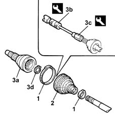

2710A54 l/h or r/h wheel end constant velocity joint (one) - r + r with drive shaft removed - including boot replacement
- Path
- Procedures > 27 AXLE > 2710 FRONT AXLE > 2710A drive shafts and joints > 2710A54 l/h or r/h wheel end constant velocity joint (one) - r + r with drive shaft removed - including boot replacement
- Kind
- repair procedure (removal / refitting; the operation number is the code)
- Applies to
- all engines; all production periods
- Interactive page
- https://sloeber94.github.io/elrnDB-lYpsln/en/#/2429144
Applies to: engines: 1.2 8v, 1.2 16v, 1.4 16v; all production periods
 Removing
Removing
 Refitting
RefittingPlace the drive shaft in a vice fitted with protective jaws.
1. Remove the protective boot fastening bands.
2. Move the protective boot back.
3. Remove the wheel side constant velocity joint (3a) using the tools (3b) and (3c) using pliers on the circlip (3d) at the same time.
 | Name | Country |
|---|---|---|
3b | Counter weight | 1.847.017.000 |
| Name | Country |
|---|---|---|
3c | Adaptor | 1.860.889.000 |
Remove the circlip locking the constant velocity joint, wheel side.
Remove the protective boot.

Applies to: engines: 1.3 JTD; all production periods
Removing
RefittingPlace the drive shaft in a vice fitted with protective jaws.
1. Remove the protective boot fastening bands.
2. Move the protective boot back.
3. Remove the wheel side constant velocity joint (3a) using the tools (3b) and (3c) using pliers on the circlip (3d) at the same time.
| Name | Country |
|---|---|---|
3b | Counter weight | 1.847.017.000 |
| Name | Country |
|---|---|---|
3c | Adaptor | 1.860.889.000 |
Remove the circlip locking the constant velocity joint, wheel side.
Remove the protective boot.
Applies to: engines: 1.2 8v, 1.2 16v, 1.4 16v; all production periods
Refitting
RemovingClean the residual grease of the components and check their condition.
Fit a new protective boot on the driveshaft.
Refit the constant velocity joint, wheel side, back in its seating complete with a new circlip.
Refit the gaiter back in its seating, then fill it with the recommended grease.
 | Type | Component | Name | Qty. |
|---|---|---|---|---|
- | Grease (g) | WHEEL END CONSTANT VELOCITY JOINT | TUTELA STAR 500 | - |
Fasten the protective boot using the bands.
Remove the driveshaft from the vice.
Applies to: engines: 1.3 JTD; all production periods
Refitting
RemovingWash the joint thoroughly using diesel or petrol, and visually check that there are no signs of seiaure or scoring on the balls and their seats.
Fit a new protective boot on the driveshaft.
Refit the constant velocity joint, wheel side, back in its seating complete with a new circlip.
Refit the gaiter back in its seating, then fill it with the recommended grease.
| Type | Component | Name | Qty. |
|---|---|---|---|---|
- | Grease (g) | WHEEL END CONSTANT VELOCITY JOINT | TUTELA STAR 500 | - |
Fasten the protective boot using new bands.
Remove the driveshaft from the vice.